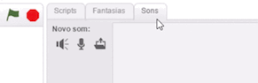

Personalize seu jogo
O que mais você quer adicionar ao seu jogo? Tente algumas dessas ideias.
Adicione som
Clique na guia Sons, depois clique em 

Agora escolha um som de aplausos ('clapping') ou de torcida ('cheering').
Clique na guia Scripts. Selecione a categoria Som e arraste um bloco toque o som até o fim até a área de Scripts.
Encaixe o bloco de som no script, assim:
Anime os Atores
Faça com que o gato pareça estar correndo alternando suas fantasias.
Basta adicionar um bloco próxima fantasia. Para ver as fantasias, clique na guia Fantasias.Corra Contra o Computador
Faça com que um dos atores se mova automaticamente.
Pinte e Decore
Aprimore o seu jogo desenhando um novo pano de fundo ou adicionando fantasias para os atores.
Explore e Faça Experiências
Ou personalize seu jogo da forma que quiser! Tente fazer uma corrida de natação ou de outro tipo.